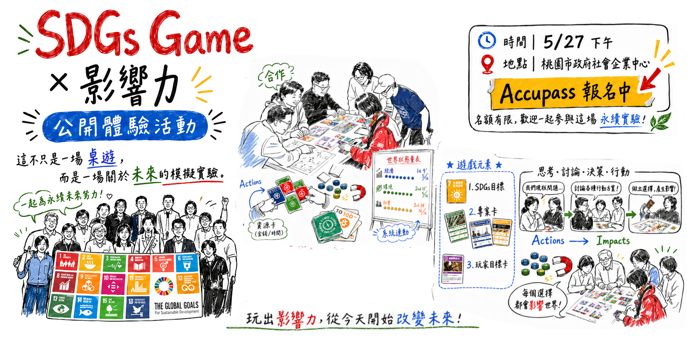
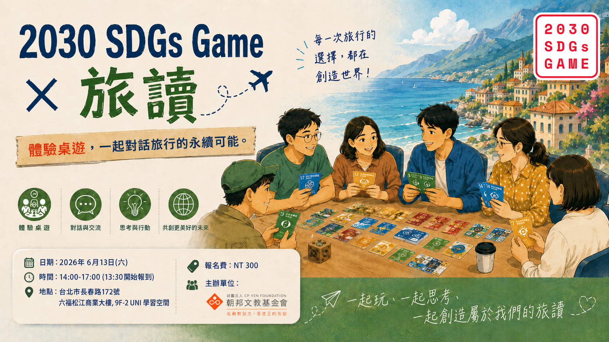
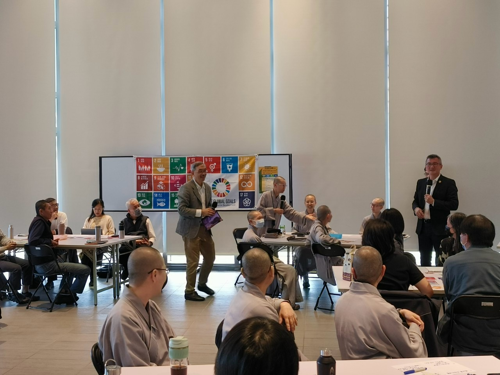
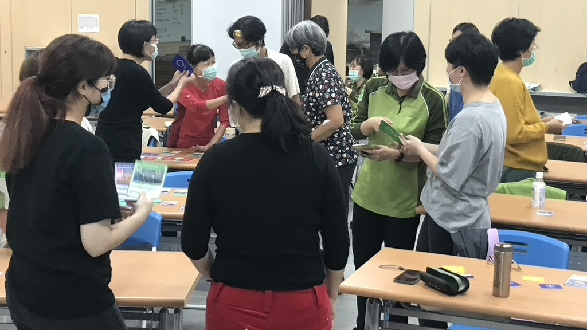
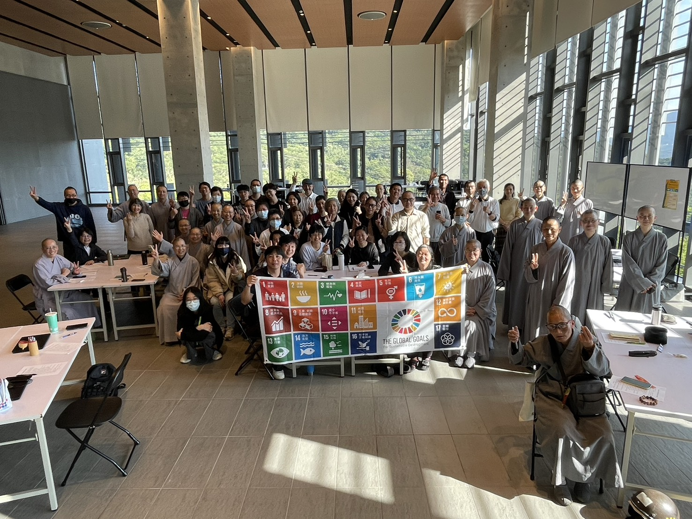
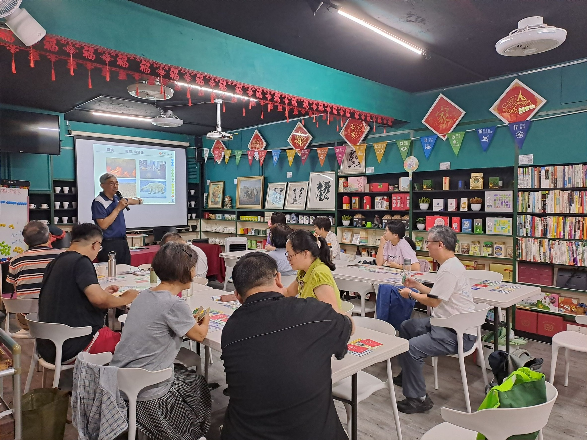
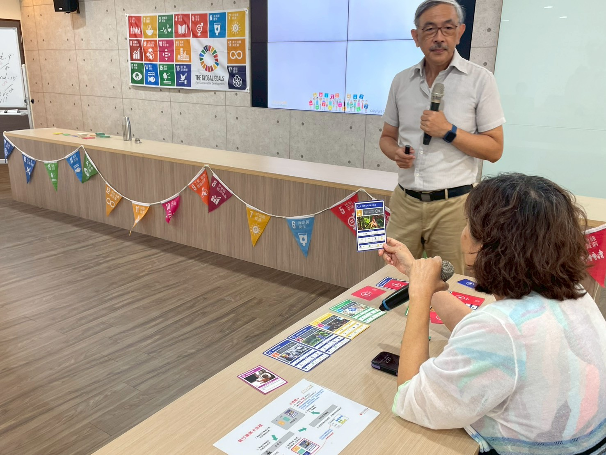

01
進入世界
拿到自己的目標、時間與金錢，開始判斷：我想完成什麼？
每個人都有自己的目標，也只有有限的時間與資源。你的每一個選擇，都可能改變我們共同生活的世界。

沒有標準答案。點一張卡，看看一個選擇會帶出什麼問題。
2030 SDGs Game 不只是認識 17 項永續發展目標的桌上遊戲，而是一場關於選擇、互動、合作與未來的模擬體驗。
你會帶著自己的目標、時間與金錢進入一個縮小的世界，選擇專案、交換資源、尋找夥伴。每執行一個專案，不只影響自己，也會改變經濟、環境與社會的共同狀態。

拿到自己的目標、時間與金錢，開始判斷：我想完成什麼？
資源並不充足。交易、溝通、協商與合作，開始發生在人與人之間。
一個又一個行動，牽動經濟、環境與社會。個人選擇正共同塑造世界。
回看剛才發生的事，連結真實的組織、工作與生活，讓覺察走向行動。
每一次行動，都可能讓某些狀態上升，也可能讓另一些狀態下降。當世界改變，我們的行為會不會也跟著改變？
只靠自己，很難完成所有目標。於是人們開始交換資源、理解彼此的需要，也開始問：我們要一起創造一個什麼樣的世界？
從拿起第一張卡，到跨桌尋找資源；從完成自己的目標，到開始關心世界的狀態。轉變，就藏在每一次對話裡。




玩完之後，我們不急著告訴參與者答案，而是透過有結構的提問，把體驗中的發現帶回真實世界。
不只問「我們做了什麼」，更進一步看見：我們的行動究竟創造了什麼改變？
從部門與個人目標，重新看見組織整體與永續之間的關係。
理解不同政策目標如何彼此牽動，練習兼顧經濟、環境與社會。
從「做了多少事」，走向看見真正希望創造的改變。
從計畫投入與成果，延伸思考 Outcome 與 Impact。
不必先背 17 項目標，先從選擇與行動理解自己和世界的關係。
不同的人帶著不同目標進場，從差異中找到合作的可能。

SDGs × 引導 × 永續 × 影響力
我長期投入組織發展、人才培育、對話引導、永續發展與社會影響力。
對我而言，2030 SDGs Game 最有價值的地方，不只是讓參與者認識 SDGs，而是創造一個縮小的世界，讓平常不容易被看見的決策模式、利益關係與系統影響浮現。
最後，再透過有結構的引導與對話，把這些發現帶回真實世界。
如果你正在思考：
如何讓團隊真正理解永續？
如何讓 SDGs 不只是 17 個彩色圖示？
如何從永續議題開始一場有意義的組織對話？
先告訴我你想把這場體驗帶給誰，我們再一起想像適合怎麼發生。